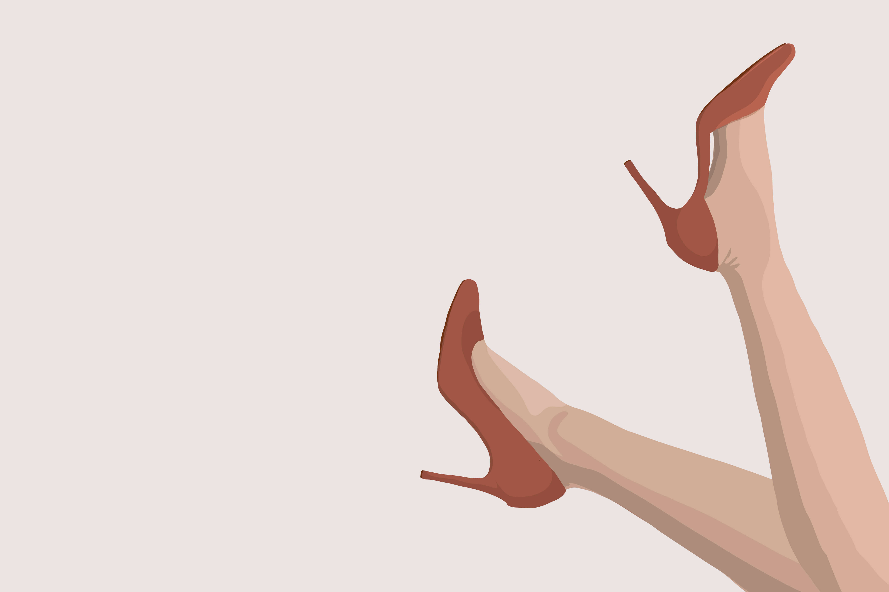

淫：邪淫。
人有七情六欲不足为怪，食色性也人之常情。但是在枯燥和艰难的创业道路上，管理好个人的私欲，尤其是在需要发泄情绪、舒缓压力或者犒赏自己时，还能坚守底线，才能被视为拥有强大的内心。
我不想炒那些知名人士的冷饭，也不愿对别人的事情指指点点，更不希望被误会把失败甩锅给女性群体。索性跳过狗血的细节、放下道德的批判，仅从创业者的角度来聊聊这类事情的影响吧。
创业者通常都会为自己树立一个人设，通常是睿智、豁达、开明、谦逊、博学、担当，做不做得到不重要，不过是张名片罢了。也有个别的会用神童、状元、高知一类的称号来力求鹤立鸡群，有多少水分暂且不论，无非是想找点儿背书而已。蝇营狗苟，司空见惯。不论怎么打造形象，目前我还没看到谁是主打个贪财、好色、虚伪、薄情、寡义的，毕竟三岁的孩子都知道这些是不好的。
正因为如此，那些蠢蠢欲动的私欲，对于随时要在聚光灯下争名逐利者而言，显得格外拿不上台面。
当然不能指望没有道德瑕疵的完人才能去创业，我也不赞成设立“劣迹创业者”来阻挡任何人实现梦想。精力过于旺盛、欲望相当强烈的人，学会分清轻重缓急尤为重要。融资期遇小三逼宫，慌乱间解散工作群；也有嘴脸太过渣男，被人铭刻在互联网记忆里……这些事，对内影响团队氛围和信任，对外又是尽职调查的巨大隐患。可以说，为了满足两分钟的欲望，很可能造成今后至少两年的挫败。
也可以把这看作是一种淘汰机制，过滤掉那些表面阳光、内心阴暗的人。但我写这篇文章，主要是想给像我这样，既不特别好也不特别坏、想坏不敢太坏、想好做不到太好的人一点儿启发，坚持自己的三观，盛世勤积德，逆境多读书。不要一有点儿阶段性的胜利就得意忘形，觉得自己可以变坏了。
路还长！套用曾经的一篇奇葩文章的标题——创业者要管好三巴。